Team App - refocusing on the user
iOS and Android App

The Problem
Service Autopilot users need a way for their employees to accurately track time and resources while out on the job. The current app was not built with the users in mind and the Service Autopilot team would like to remake it.

Goal
Align on requirements, Design, and test a mobile app that works with the SaaS web application to allow users to capture field data that the office needs them to track

Timeline
4-5 months of work with the mobile app team and product team.
 Outcomes:
Outcomes:
- 3x the number of team app subscriptions.
- Raised the average usability task success score by 20%.
- Released a Spanish version of the App
- 0 -> 1 release of the new Team App

Main Features
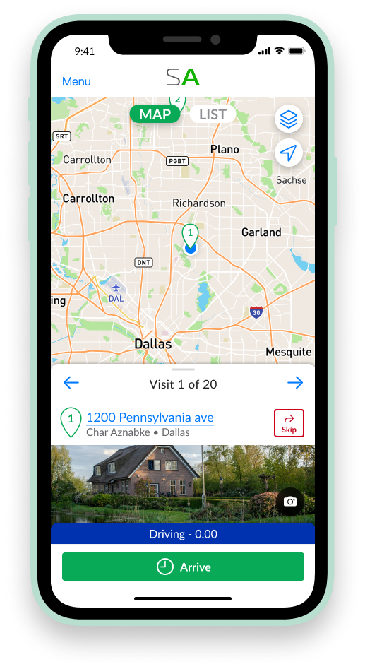
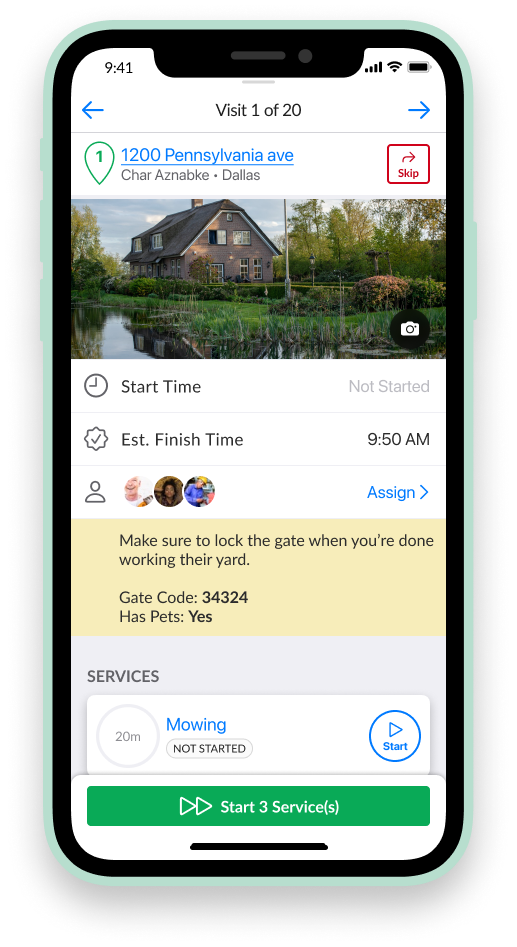
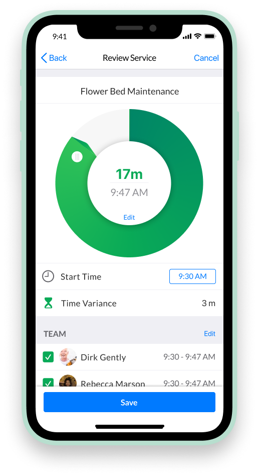
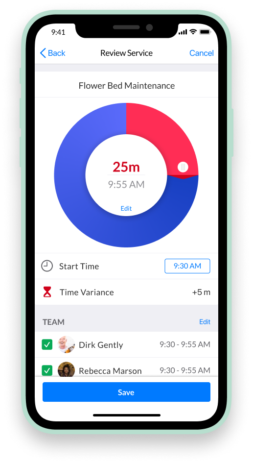
Target Users (Personas)
To better understand our users' needs and motivations, we launched a survey on the site and used the responses to create three distinct personas. These personas were grounded in real user data, highlighting patterns in goals, pain points, and behaviors. By synthesizing the survey findings into relatable characters, we gave the team a shared language to empathize with our audience and design more intentionally. The personas helped us prioritize features, tailor our messaging, and make user-centered decisions throughout the project.
One of the big insights that we gained from the persona creation was the feature of making the team app accessible in Spanish along with English. We learned that a good amount of the lawn care team members were in the US on an H1B visa for the season and only spoke Spanish. This helped the stakeholders see the value in us putting time in translating the app into their native language.
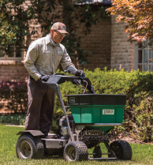
Lawn care
They value efficiency, reliable tools, and clear instructions to get the job done right the first time.
Team leader
They value clear communication, staying on schedule, and building trust with both clients and team members.
Business owner
Small business owners of lawn care and landscaping companies are hands-on entrepreneurs who balance daily operations, customer relationships, and team management.
Initial Planning / Wireframes
Early stage ideation of the team app screens. Our first step in developing this app was to first meet together as a team for brainstorming sessions to formulate exactly what requirements and basic designs we wanted to have or include in the app. Then I, as the UX Designer, took our results and drew low-fidelity prototypes from them. My goal was to then use all of our initial drawings trying to incorporate all of the written requirements and user personas that we all had agreed upon during our brainstorming sessions.
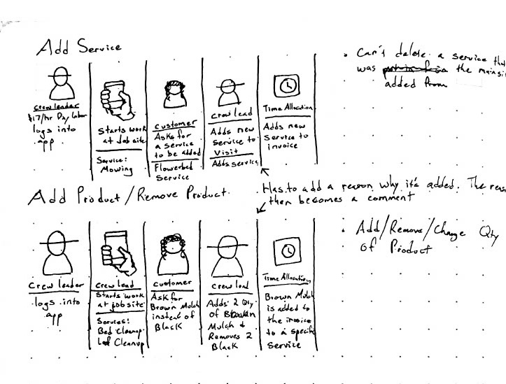
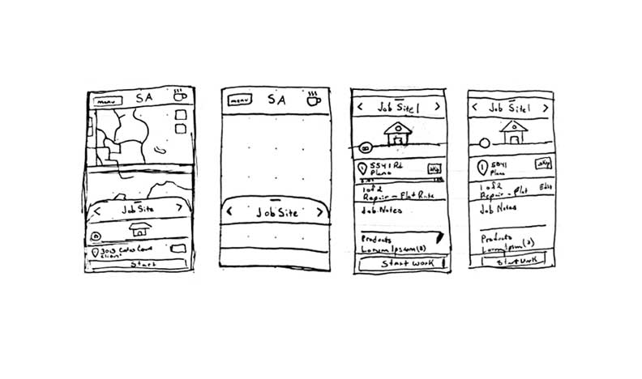
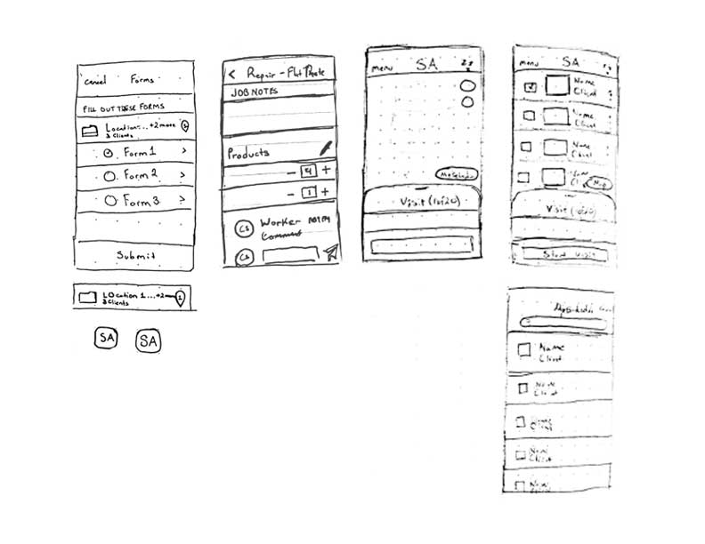
User Flow Diagram
Creating a user flow diagram was a crucial step in helping our team align on the overall experience we wanted to design. By mapping out the user’s journey step by step, we were able to visualize the key decision points, interactions, and screens involved. This clarity helped the team identify potential gaps early, streamline the path to the most important actions, and ensure we were solving the right problems. It also served as a shared reference point across disciplines—design, product, and engineering—so everyone was on the same page before diving into detailed design work.
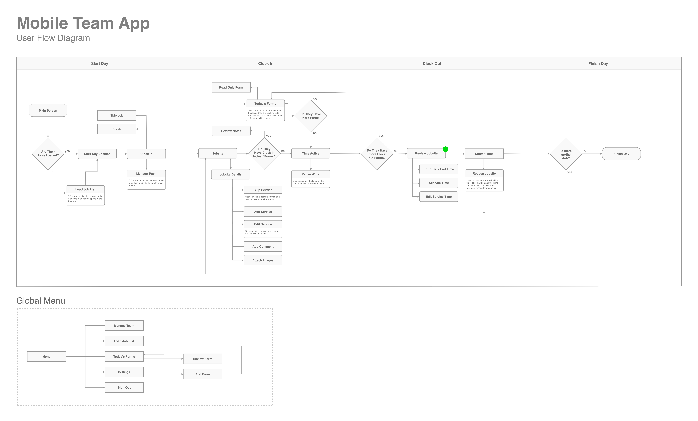
Usability Testing
My team and I fleshed out user stories and requirements that I then designed and tested. I conducted 3 rounds of usability testing with ~30 active users of Service Autopilot. The participants varied both in company size and technical level, but all said that they have interest in the original, more complicated mobile app.
The Missions are the most commonly used cases for the Team App. They were used for creating wireframes and conducting usability testing. Each mission is in green. The Missions are then broken down into tasks that we will give to the test participants to complete the mission.
Setup Day:
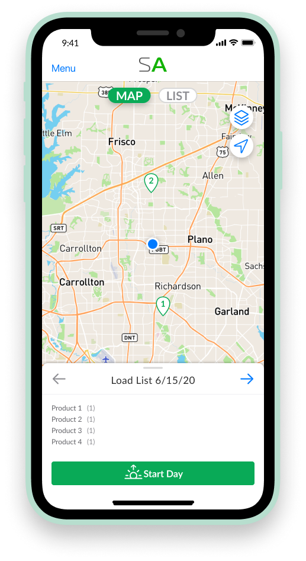
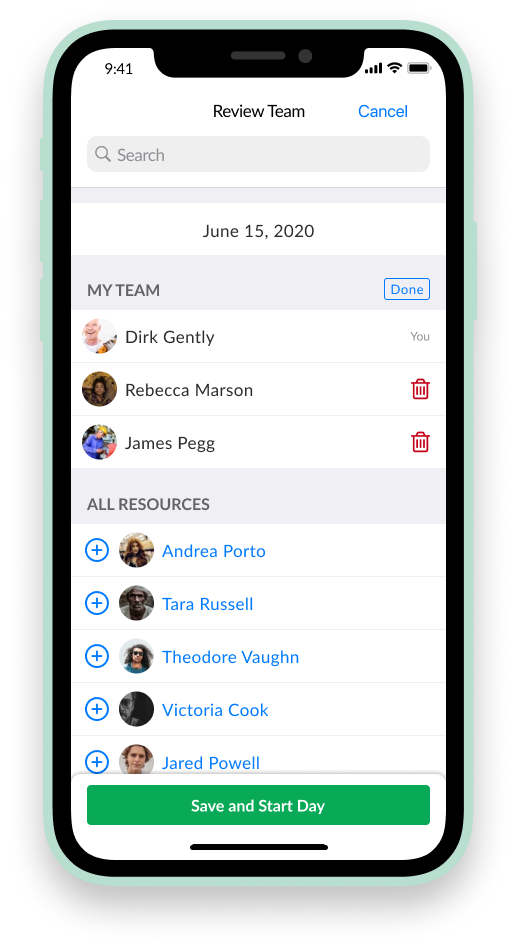
Tasks:
1. You are about to begin your day. In your words, what do you believe “Load List” means at the bottom of your screen?
2. At the start of the day, one new team member is going to be added to your team from team 1. Could you add “Andrea Proto” from team 1 to your team.
System usability scores over time
90 | 90 | 93
Results
Not much changed from the original prototype, but we were able to decrease the amount of time it took users to start their day.
Clocking the time for an individual visit:
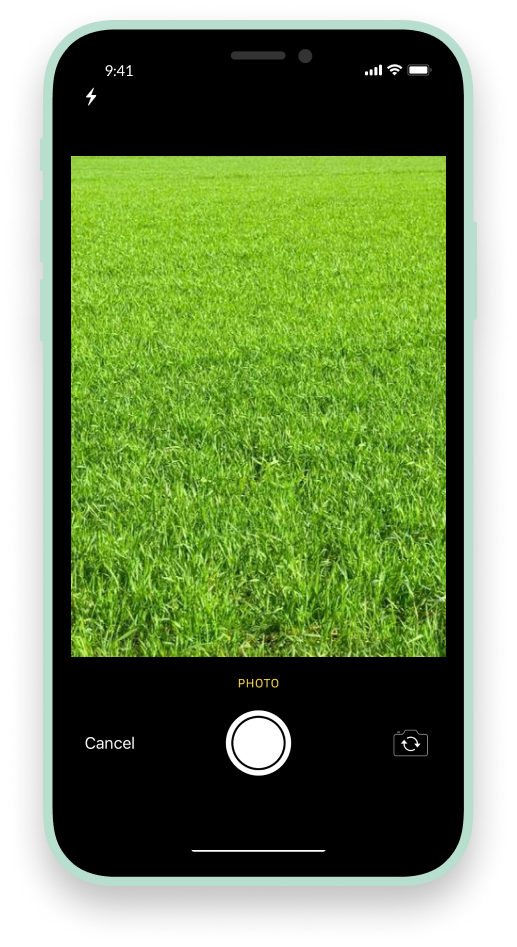
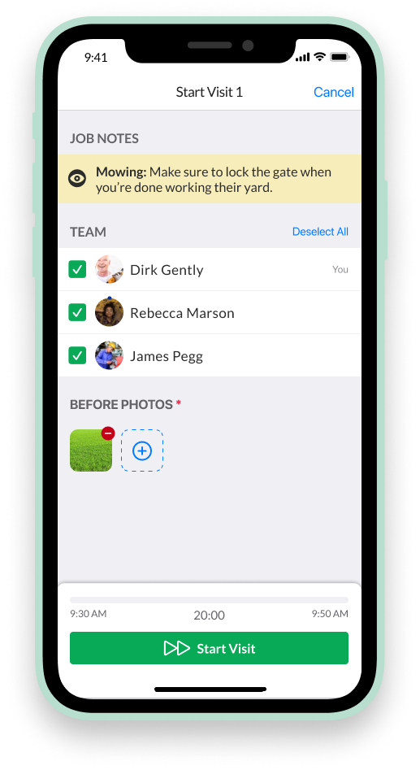
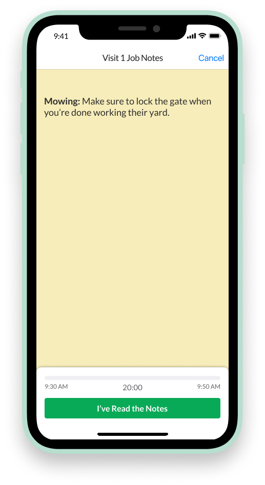
Tasks:
1. Start the timer for all the services at visit 1. Follow the steps to start the visit (take a before photo, review the job notes, and check the assignments).
2. You have completed the work at your first visit. Complete the visit, which will bring up the review visit screen.
3. The Service “Flower Bed Maintenance” took less than an hour to complete. Could you change the duration from 1 hour to 30 mins?
System usability scores over time
69 | 70 | 77
Results
The mission score started low because of the complexity of the screens and tasks that we had the users accomplish. We were able to increase the mission score by making the tasks more intuitive.
Servicing multiple visits at once:
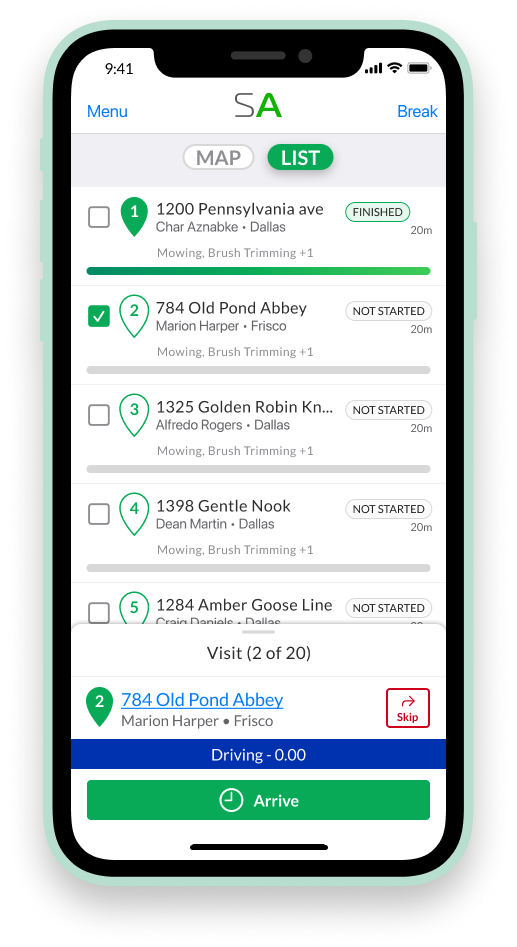
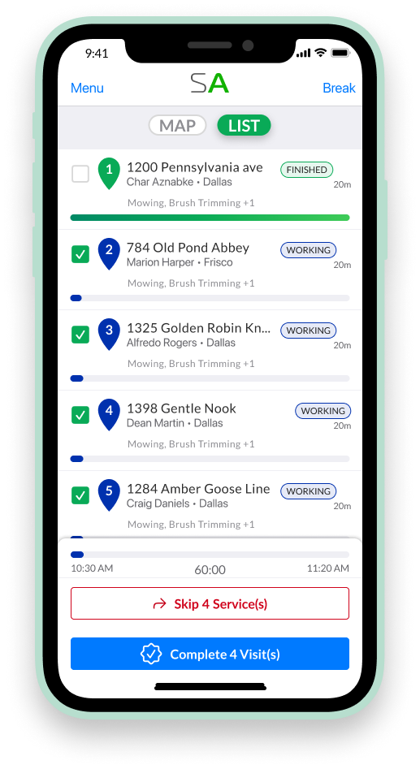
Tasks:
1. Let’s start the next four visits, 2 - 5, so our team can begin working on them.
2. Your team has finished their work and are ready to move on to visit 6. Complete all the visits at once.
System usability scores over time
63 | 77 | 80
Results
We were able to dramatically increase the ease of starting multiple visits at once by adding the schedule screen to the scope of the project. It's fairly common in the lawn maintenance industry for them to park their truck and then mow multiple homes at once. With that mission in mind it was very difficult for users to accomplish that task with the first iteration. Adding a screen that showed the whole schedule dramatically increased the score of this mission and added overall value to the product.
Starting and Stopping individual services:
Tasks:
1. First, start just the “Mowing” service. View the Job Notes and only assign the first two workers to this service.
2. Start the next service Brush Trimming. Only assign the one remaining worker “James Pegg”.
3. Skip the second service “Flower Bed Maintenance” and provide a reason for not doing it.
System usability scores over time
81 | 73 | 85
Results
One of the requirements of the Team App is to require users to take photos, view notes, and assign employees if the owner wants them to. In round 2 of testing I tried to change this workflow by creating a Review Screen that included all these items so they would be able to do them all at once. And I found that users were able to complete the tasks faster and more accurately when required items conveniently popped up in order for them. This we refined and implemented in round 3, increasing the mission score by 12%.
Final Designs
Final Outcome
Achieved average Usability score of ~80.
We achieved an average usability score of approximately 80, indicating a strong level of usability and overall user satisfaction.
Released a brand new 0 -> 1 app.
We were able to go through the entire design process of discovery/define to designing and delivering an app for iOS and Android.
Increased the amount of users per team by adding new features.
By adding more features and letting individual users start and stop jobs and services we were able to increase the potential market for the app and could sell the app access in packages for teams rather than individual licenses.
Watch a full demo of the app: Link to video
Thanks for reading!
Want to talk about this project, or one like it?
Email meNext case study
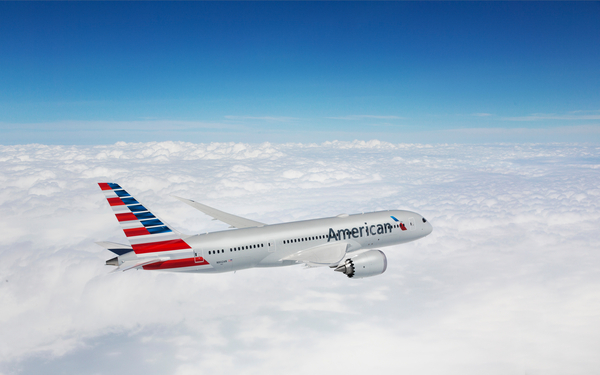
American Airlines - Choose flights
Redesign of flight selection on aa.com that added $111M a year in revenue.